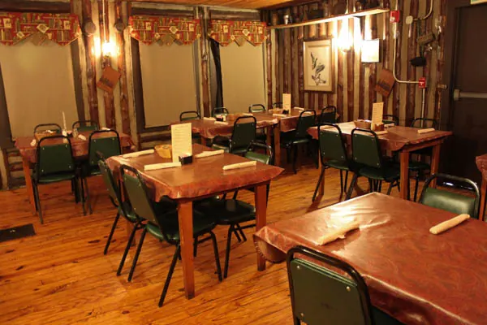
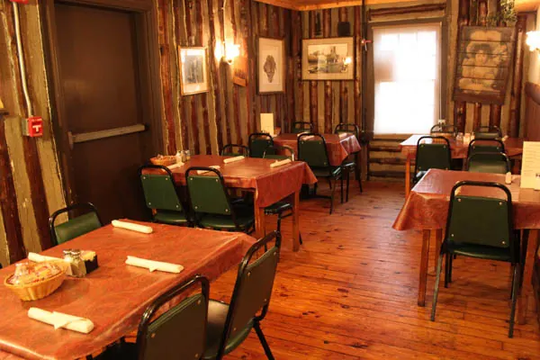
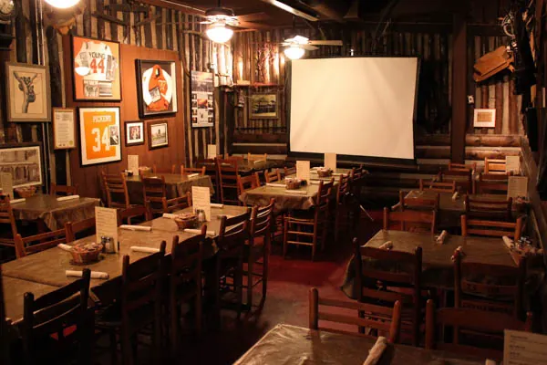
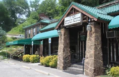

Visit, Reservations & Parties
Reservations are by phone. Call ahead.
Find us
6838 Chapman HighwayKnoxville, Tennessee 37920
In South Knoxville, less than 6 miles from downtown.
Hours
| Monday | 4 to 9 PM |
|---|---|
| Tuesday | 4 to 9 PM |
| Wednesday | 4 to 9 PM |
| Thursday | 4 to 9 PM |
| Friday | 4 to 9 PM |
| Saturday | 4 to 9 PM |
| Sunday | Closed |
Closed Thanksgiving, Christmas Eve and Day, and New Year’s Day.
Call
One number for reservations, carry out, and cakes and pies to go.
Reservations
We always accept reservations for parties of 5 or more. Smaller parties are seated first come, first served, “and your wait is never long because you are with friends.”
Holidays fill up quickly, so book early.
Getting Here
The lot sits on a hill on a busy stretch of Chapman Highway. A regular’s advice, from a Google review:
“The restaurant is located on a very busy stretch of Chapman Highway and parking is limited so use extra caution when arriving and leaving”
Rhonda Whaley · Google review, 9 months ago
The same reviewer’s accessibility tip: “Enter through the exit to avoid steps.”
Private Rooms & Holiday Parties
Private banquet and dining rooms for business meetings, graduations, weddings, birthdays, anniversaries and office parties. There are larger rooms and smaller, more intimate ones; the meeting rooms have equipment for a presentation. Set menus are available, and it is BYOB for wine and liquor.



Cakes & Pies to Go
Locals order Miss Ethel’s whole cakes and pies and carry them home: red velvet, creamy coconut, Italian cream, German chocolate, chocolate layer, key lime, Hoosier and peanut butter.
Call ahead to order one for your event: (865) 577-9328.
